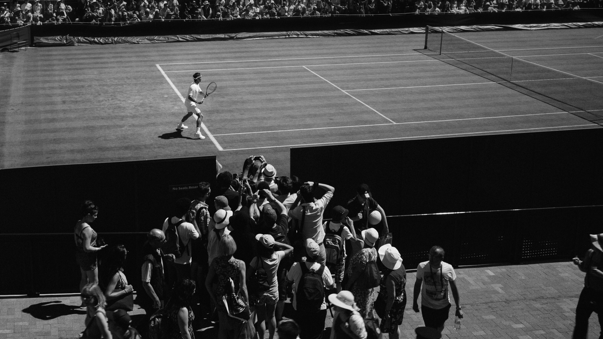

테니스(영어: tennis)는 두 명의 선수(단식) 또는 각각 두 명의 선수로 이루어진 두 팀(복식)이 겨루는 라켓 스포츠의 한 종류이다. 선수들이 줄이 매어진 라켓을 이용해 속이 비고 표면이 펠트로 이루어진 고무 재질의 테니스공을 쳐서 네트 너머 상대방의 코트로 계속하여 넘겨서, 어느 한 쪽이 공이 두 번 바운드 되기 전에 치지 못 하거나 친 공이 네트를 넘지 못 했을 때, 혹은 친 공이 상대방 코트에 들어가지 못 했을 때 그 실패한 선수의 상대방이 점수를 따는 방식으로 진행된다. 경기의 종류는 선수 구성에 따라 단식과 복식, 혼합복식으로 나뉜다. 과거에는 소프트 테니스(연식 정구)와 함께 하드 테니스(경식 정구)라고 불리기도 했다.
현대 테니스는 19세기 후반 잉글랜드 버밍엄에서 행해졌던 론 테니스(lawn tennis)에 기원을 두고 있다. 이것은 크로케나 잔디 볼링과 같은 여러 종류의 필드 스포츠 및 옥내 테니스와 같은 더 오래된 라켓 스포츠와 깊은 연관을 갖고 있다. 19세기에는 테니스라는 용어가 일반적으로 론 테니스가 아닌 옥내 테니스를 가리키는 것이었다. 일례로, 벤저민 디즈레일리의 소설 시벌(sybal, 1845)에서는, 유진 드 비어 경이 '햄프턴 코트에 내려가서 테니스를 치는' 장면이 등장한다.